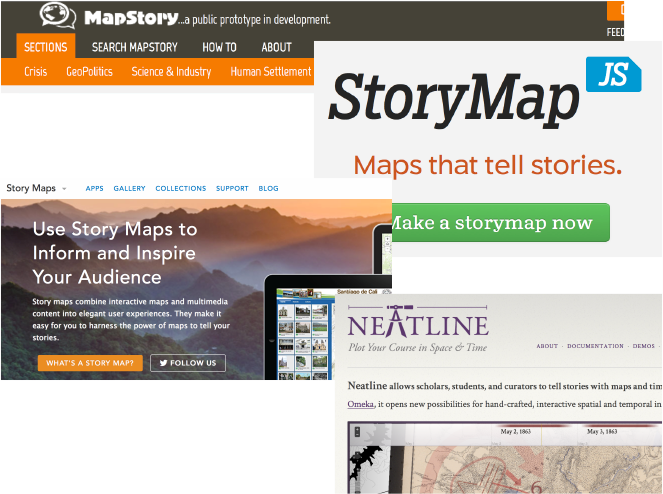

On May 7th, Stanford University Libraries’ Center for Interdisciplinary Digital Research (CIDR) welcomed David O’Sullivan, Associate Professor of Geography at the University of California, Berkeley to the Stanford campus for two events: a panel discussion on geospatial narrative and a guest lecture on spatial simulation modeling.
The slides and audio from David’s lecture: “Simple spatial models: Building blocks for process-based GIS?"
A brief summary of the panel discussion follows.
Geospatial narrative: Perspectives from the humanities, cartography and geographic information science
In order of presentation, the panelists were Karl Grossner (Stanford, CIDR), Anne Knowles and Levi Westerveld (Middlebury College Geography), Erik Steiner (Stanford, Spatial History Project/CESTA), David O’Sullivan (UC Berkeley Geography), Nicole Coleman (Stanford, Humanities+Design/CESTA), and Nicholas Bauch (Stanford, Spatial History Project/CESTA).
Karl Grossner began with an explanation of the motivations that led to the event, and presented a list of discussion points and questions the panelists themselves had jointly gathered beforehand. The publication of geospatial narratives, by the general public and as a scholarly practice, has grown significantly in recent years—evidenced by a growing number of web-based authoring platforms for it, including: Omeka Neatline, MapStory, ESRI’s Story Maps, StoryMap.js, and HistoryPin. Creators of these works (often though not always historical) are also using GIS (ArcMap, QGIS) and other kinds of advanced geospatial software to perform analyses on historical data.
[commented slides: “Geospatial narrative: Perspectives from the humanities, cartography and geographic information science”]
The nature of the data—often sparse, indeterminate, uncertain—and the kinds of questions being asked—qualitative and quantitative in some combination—are considerably different than those for which GIS and spatial analytic software has been developed over the years. For example, representing temporality with a series of snapshots has proven adequate for many applications but dynamic processes are more problematic and in historical studies, space and time (place and period) are often inextricably intertwined. Discussions between humanities scholars and GIScientists concerning new representational and computing requirements does occur, but is sporadic and unfocused. This panel was organized as one effort to make such discussion directed and explicit.
The questions we asked ourselves were:
- Does historical simulation open significant untapped avenues for new historical spatial narratives or is it too reductionist to be accepted by/useful to humanists?
- Is there a place for performative art in the spatial humanities? Or does art lack the empirical and representational rigor that is necessary to comprehend data and derive meaning?
- what does “spatial narrative” mean?
- how does it differ from verbal narrative: is that even a meaningful distinction? a genuine binary?
- what’s missing or inadequate in existing tools, models, methods?
Anne Knowles and her student collaborator, Levi Westerveld presented work‑in‑progress taking a new and extraordinary approach to historical narrative as part of the ongoing and long-standing Geographies of the Holocaust project. It deliberately departs from many traditional cartographic conventions, but retains distinctive spatial dimensions that foregrounds topology and scale, is “unhinged” from any typical base map, retains geographic orientation and is presented as an animation. They have generously shared an early short video product of the work, and discussed the distinctive design process for it.
In the video, holocaust survivor Paul Schneiderman describes aspects of his family’s activity as an audio overlay to an evocative and artistic animation of spatial elements within the story. Quoting Anne,
“Using a variety of manual and computer-based methods, we have teased out the spatio-temporal information [the recorded testimonies] contain, while also diagramming the narrative structure of each interview. Our initial results demonstrate the value of slow thinking through visualization in the early stages of research, a process we have come to call inductive visualization; the potential to retain the nuance and depth of human experience while seeking spatio-temporal patterns; the serious challenges digital methods pose when working with emotional, narrative material; and the value of developing an intimate relationship with one's historical sources.”
Erik Steiner presented some of his own work on Geographies of the Holocaust that breaks from cartographic norms in a couple of ways. One piece, “Mapping Mobility in the Budapest Ghetto,” a collaboration with Tim Cole and Alberto Giordano, uses a simulation model and interactive animated mapping application to analyze the spatial constraints and implications of temporal restrictions on Jews free movement throughout the city.
David O’Sullivan presented his recent research using complex spatial simulation models of human and ecological characteristics and behaviors (~30 parameters) leading to de-forestation, resource exploitation and species extinction for an island. He and collaborator George Perry used clustering analysis to extract six typical 'narrative arcs,' each of which is associated with a distinctive 'history' of the island. Using principal component analysis (PCA) they were able to identify those parameters most relevant to each cluster/arc.
David characterized their preliminary findings as demonstrating “radical contingency;” namely that any story is possible on any island, and that both environmental and human factors are only weakly determinative of the outcomes.
[slides: “Identifying ‘narrative arcs’ to explain outcomes in an agent-based model of island resource exploitation”]
Nicole Coleman*’s* presentation, titled “Reading and Writing History through Graphs” first addressed the way aesthetically pleasing, even artistic, representations can be instrumental in effectively representing places, then segued to discussing the early stages in development of a new visual analytic tool being developed by her Humanities+Design group, Idiographic. Idiographic is not geographic, but decidedly spatial and temporal, and involves narrative on two levels. First, it allows a force-directed graph representations of relations between people (which could in cases be co-location), and enables researchers to add new nodes (individuals) and links (relations) joining the network over time, and visualize how their introduction impacts the organization of clusters in the existing graph.
[ ](http://dh.stanford.edu/docs/Nicole 20150507_Geography-Narrative.key)
](http://dh.stanford.edu/docs/Nicole 20150507_Geography-Narrative.key)
Nicole related a real-world narrative of knowledge-production: the engagement of a particular researcher with a particular historical dataset and the Idiographic tool, describing the way it enables exploring hypotheses about the nature and impact of dynamic connections between people—for example by introducing new classifications of people according to profession or groups of professions.
[slides: “[Reading and Writing History through Graphs](http://dh.stanford.edu/docs/Nicole 20150507_Geography-Narrative.key)”]
Nick Bauch presented “Digital Spatial Narrative and the Production of Photographic Space at the Grand Canyon,” discussing work Enchanting the Desert, his “born-digital, peer-reviewed, book-length project that offers spatial analysis and historical interpretation of the 40 landscape photographs included in Henry Peabody’s circa 1905 slideshow of the Grand Canyon.” The interactive web publication nearing completion surrounds each photograph with contextualizing material—a labeled version, a viewshed terrain map indicating in the area depicted, and links to those essays in the project relating to the photo. The means for navigating the collection, both freely and in an author‑guided order are provided, the distinctive digital capability “allowing the spatial narrative.”
Enchanting the Desert will be the first in a series of experimental digital interactive monographs to be published by Stanford University Press.
[slides: “Digital Spatial Narrative and the Production of Photographic Space at the Grand Canyon”]